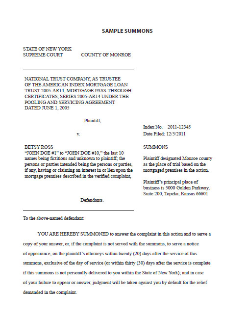
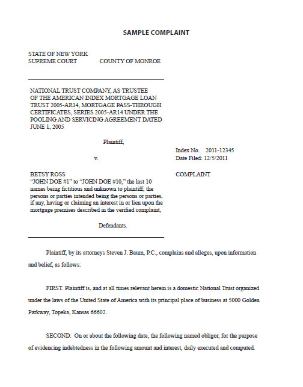

The Summons and Complaint is what tells you that a lawsuit has been started. The Summons and Complaint are created by the Bank's attorneys, and throughout them you will be referred to as the Defendant. The Summons is usually one of the first pages, and tells you some basic information about the lawsuit that has been started. It will tell you the name of the entity that has filed the foreclosure against you. This may simply be the name of your Bank.
However, the name of the party suing you may be a long, confusing name that does not sound familiar to you. For example, you may see that the Plaintiff is "MORTGAGE SERVICING AMERICA, AS TRUSTEE FOR MORTGAGE INDEX 2005-RD4, MORTGAGE PASS-THROUGH CERTIFICATES SERIES 2005- RD4 UNDER THE POOLING AND SERVIING AGREEMENT DATED DECEMEBER 1, 2005." The example of a Summons that follows this section shows an example of one of these types of trusts.
The reason this sometimes happens is that your Bank may have taken your mortgage, bundled it with hundreds of others, and sold them on Wall Street. If that was the case, they created a "Trust" (which is a type of legal entity) that holds all the mortgages. Therefore, when a foreclosure is fi led it has to be the Trust that actually is the Plaintiff .
The Complaint tells you and the Court the reasons the Bank is suing you and what they are asking the Court to do. Because this is a foreclosure, the Bank is claiming you have not made your monthly payments as you promised in your Mortgage and Note. When you signed your Mortgage you put your house up as collateral, in case you could not pay the amount you borrowed. Now that you have fallen behind on your payments (also known as "defaulting"), the Bank is asking the Court to enforce the terms of the Mortgage. Terms of the Mortgage typically allow the Bank to sell your house if you default on your payments to them.
When you receive the Summons and Complaint, you should also receive a notice that again informs you that help is available through a housing counseling agency. This notice will be on a different colored paper, and in larger font. It should list all the HUD- approved housing counseling agencies listed in the folder of this guidebook. If you have not contacted a housing counseling agency at this point, we once again STRONGLY urge you to contact one of them and make an appointment to talk to a counselor.
It is important to note that you may receive a Summons and Complaint even if you have begun working with a housing counseling agency or with the Bank directly. You may be working with the Bank's "loss mitigation" department, which is the group that works with struggling homeowners to come up with a plan that allows you to keep your home. You may have sent in multiple rounds of documents to the Bank, and may be hopeful that a solution to your problem is just around the corner.
However, most large banks have a completely separate department that deals with filing foreclosures. Therefore, even if you are in the process of working with the Bank, the Bank still may start a foreclosure against you. If that is the case, do not despair. You can continue to work with the Bank throughout the foreclosure proceeding. So if they have asked for more documents, or have told you they are reviewing your file, you should continue this process!
Once you receive the Summons and Complaint, it is EXTREMELY important that you open ALL mail sent to you by your Bank's attorney, and by the Court. Important notices about the status of your case will be mailed to you, and it is critical that you be aware of these developments.
You will find an example of the fi rst pages of a Summons and a Complaint on pages 12 and 13.
 